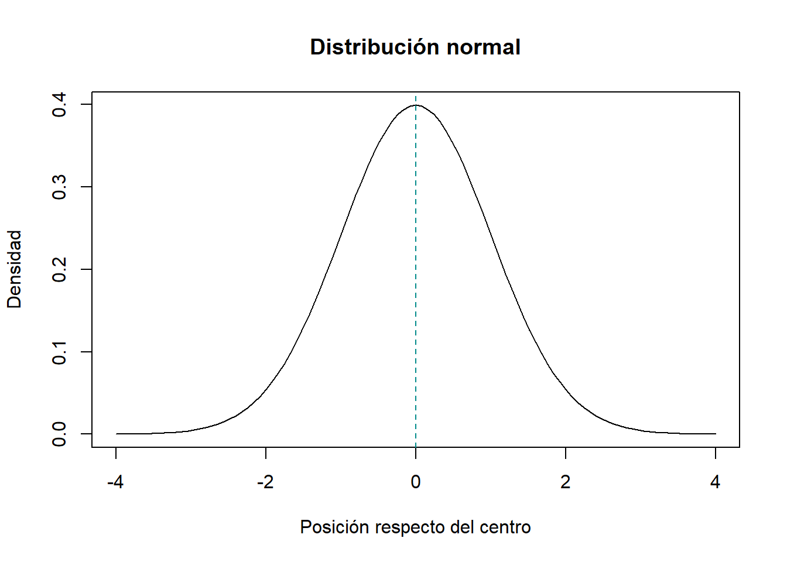
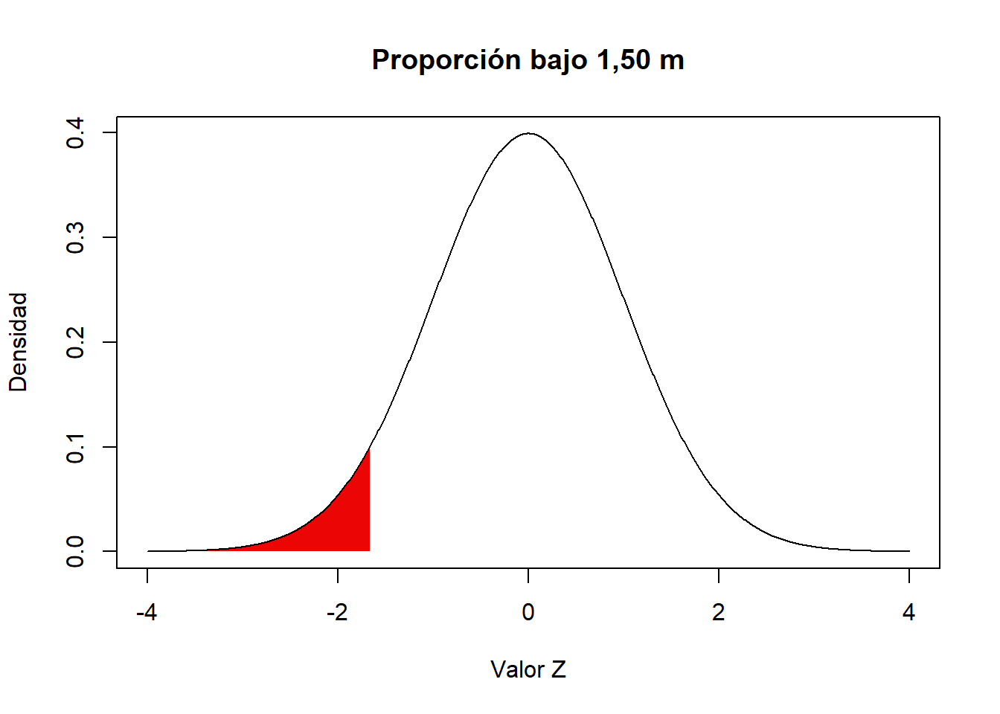
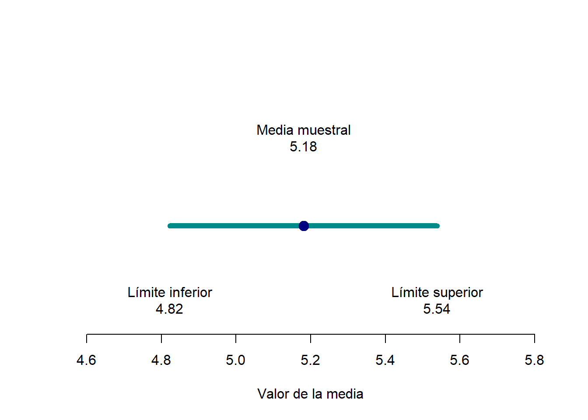
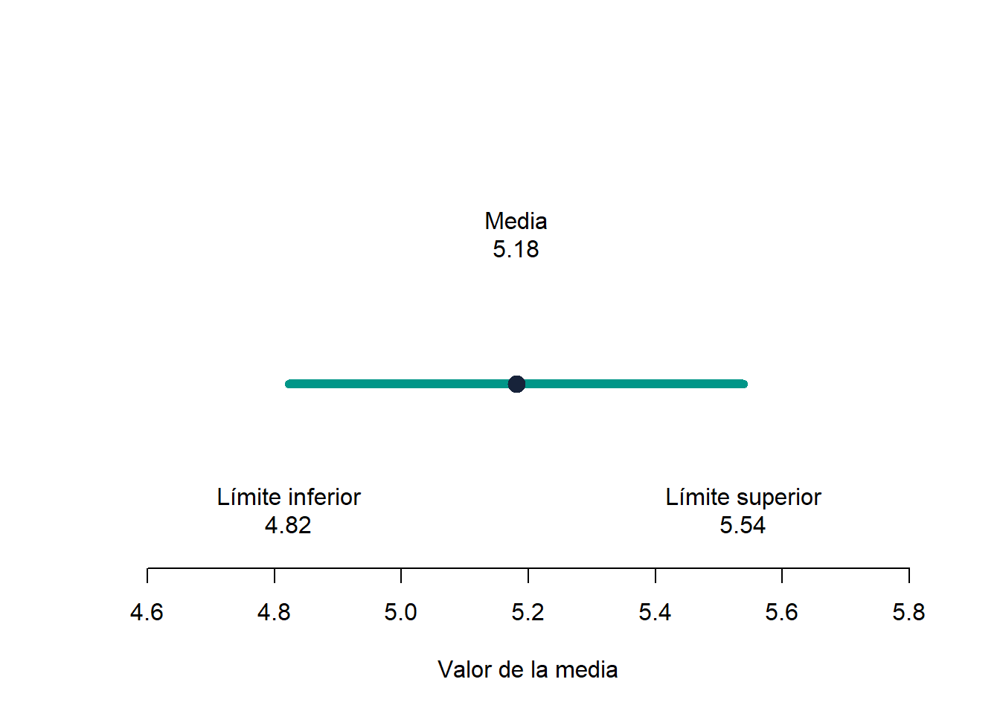

curve(
dnorm(x),
from = -4,
to = 4,
xlab = "Posición respecto del centro",
ylab = "Densidad",
main = "Distribución normal"
)
abline(v = 0, lty = 2, col = "cyan4")
Sesión del miércoles, 12 de agosto de 2026
El objetivo de esta guía práctica es utilizar la distribución normal para ubicar valores y calcular probabilidades, y estimar la precisión de una media muestral mediante el error estándar y un intervalo de confianza.
En detalle, aprenderemos a:
En la clase anterior observamos que las medias de distintas muestras no son idénticas, sino que tienden a concentrarse alrededor de la media poblacional.
Si contamos con una sola muestra, ¿cómo podemos estimar cuánto variarían las medias de muchas muestras?
Para responder esta pregunta utilizaremos la distribución normal, cuya forma observaremos en el siguiente gráfico:
curve(
dnorm(x),
from = -4,
to = 4,
xlab = "Posición respecto del centro",
ylab = "Densidad",
main = "Distribución normal"
)
abline(v = 0, lty = 2, col = "cyan4")
La función curve() dibuja la distribución normal entre −4 y 4. La línea vertical indica el centro de la distribución.
La curva es simétrica: la mayoría de los valores se concentra cerca del centro y los valores alejados son menos frecuentes. Para calcular probabilidades utilizaremos áreas bajo la curva, como veremos más adelante.
Para trabajar con un ejemplo concreto, crearemos un vector de 100 puntajes simulados con media poblacional 5 y desviación estándar poblacional 2.
La función rnorm() genera valores aleatorios a partir de una distribución normal. Sus principales argumentos son el número de valores, la media y la desviación estándar.
set.seed(123) # Fija la semilla para obtener siempre los mismos valores simulados
vector <- rnorm(100, mean = 5, sd = 2) # Crea 100 valores con media 5 y desviación estándar 2
media <- mean(vector) # Calcula la media de los valores creados
desv_estandar <- sd(vector) # Calcula la desviación estándar de los valores creados
media # Muestra la media en la consola
desv_estandar # Muestra la desviación estándar en la consolaUn vector es una colección ordenada de valores del mismo tipo. Un objeto es un nombre al que asignamos un valor para poder reutilizarlo; por ejemplo, media <- mean(vector).
La media obtenida es aproximadamente 5,18 y la desviación estándar es aproximadamente 1,83. Estos cálculos son el punto de partida para ubicar cada observación respecto de la distribución.
Al estandarizar un valor lo expresamos en unidades de desviación estándar. El resultado se denomina puntaje Z.
Recordemos que la formula para calcular el puntaje Z es: \[ z = \frac{x_i - \bar{x}}{s} \]
donde \(x_i\) es el valor observado, \(\bar{x}\) la media y \(s\) la desviación estándar. Un Z positivo indica que el valor está sobre la media; uno negativo, que está bajo ella; y uno cercano a cero, que está próximo a la media.
valor <- vector[1]
z_valor <- (valor - media) / desv_estandar
valor[1] 3.879049z_valor[1] -0.713048El primer valor es aproximadamente 3,88 y su puntaje Z es aproximadamente -0,71: se encuentra 0,71 desviaciones estándar bajo la media.
Ahora compara dos puntajes de evaluaciones diferentes:
z_evaluacion_a <- (72 - 60) / 10
z_evaluacion_b <- (650 - 500) / 100
z_evaluacion_a[1] 1.2z_evaluacion_b[1] 1.5¿En cuál evaluación la persona ocupa una posición relativamente más alta? ¿Cómo lo sabes?
La función scale() también permite estandarizar un vector completo. En este práctico utilizaremos el cálculo manual para hacer visible la lógica del puntaje Z.
Los puntajes Z permiten calcular qué proporción de los casos se encuentra por debajo de un valor en una distribución normal.
La función pnorm() calcula la proporción acumulada hasta un valor Z. Por ejemplo:
pnorm(0) # Calcula la proporción ubicada bajo Z = 0[1] 0.5Como Z = 0 corresponde al centro de la distribución, el resultado es 0.50: el 50 % de los casos se encuentra por debajo de ese valor.
Supongamos que la estatura de un grupo de mujeres tiene una media de 1,60 m y una desviación estándar de 0,06 m. ¿Qué porcentaje mide menos de 1,50 m?
Primero calculamos el puntaje Z de 1,50 m:
z_150 <- (1.50 - 1.60) / 0.06 # Calcula el puntaje Z
z_150 # Muestra el resultado[1] -1.666667Luego calculamos la proporción que se encuentra bajo ese valor:
pnorm(z_150) # Calcula la proporción que mide menos de 1,50 m[1] 0.04779035El resultado 0.0478 indica que aproximadamente el 4,8 % mide menos de 1,50 m. Esta estatura se encuentra 1,67 desviaciones estándar por debajo de la media.
En el siguiente gráfico, el área roja representa esa proporción:
x_values <- seq(-4, 4, length = 1000)
y_values <- dnorm(x_values)
plot(
x_values, y_values,
type = "l",
xlab = "Valor Z",
ylab = "Densidad",
main = "Proporción bajo 1,50 m"
)
x_area <- seq(-4, z_150, length = 100)
polygon(
c(-4, x_area, z_150),
c(0, dnorm(x_area), 0),
col = "#eb0505",
border = NA
)
lines(x_values, y_values)
Volvamos a la pregunta inicial: > ¿Cuánto variarían las medias si extrajéramos repetidamente muestras del mismo tamaño?
El error estándar de la media estima cuánto variarían las medias entre distintas muestras. Se calcula mediante:
\[ EE = \frac{s}{\sqrt{n}} \]
Donde:
\(s\) es la desviación estándar de la muestra. \(n\) es el número de casos de la muestra.
n_vector <- length(vector) # length Cuenta cuántos valores contiene el vector
ee_vector <- desv_estandar / sqrt(n_vector) # Calcula el error estándar // sqrt calcula la raíz cuadrada
n_vector # Muestra el tamaño de la muestra
ee_vector # Muestra el error estándarEn este ejemplo, la muestra contiene 100 valores y su error estándar es aproximadamente 0,18. El error estándar de 0,18 corresponde a la desviación estándar estimada de la distribución de las medias muestrales. En otras palabras, indica cuánto suelen variar las medias obtenidas en muestras del mismo tamaño.
La desviación estándar indica cuánto varían los valores individuales. El error estándar indica cuánto variarían las medias entre distintas muestras. Un error estándar menor representa una media estimada con mayor precisión.
Mantengamos la misma desviación estándar y comparemos muestras de 25 y 100 casos. Antes de ejecutar el código, anticipa: ¿cuál tendrá menor error estándar?
ee_n25 <- desv_estandar / sqrt(25) # Calcula el error estándar para 25 casos
ee_n100 <- desv_estandar / sqrt(100) # Calcula el error estándar para 100 casos
ee_n25 # Muestra el error estándar para 25 casos[1] 0.3651264ee_n100 # Muestra el error estándar para 100 casos[1] 0.1825632El error estándar disminuye de aproximadamente 0,37 a 0,18 cuando el tamaño de la muestra aumenta de 25 a 100 casos. Por lo tanto, una muestra más grande permite estimar la media con mayor precisión. La desviación estándar se mantuvo igual en ambos cálculos; lo único que cambió fue el número de casos.
El error estándar indica cuánto podrían variar las medias si tomáramos muchas muestras del mismo tamaño. En este ejemplo, un error estándar de 0,18 significa que las medias muestrales variarían alrededor de la media poblacional.
El error estándar permite construir intervalos de confianza, es decir, rangos de valores plausibles para la media poblacional.
Supongamos que los 100 valores creados anteriormente corresponden a una muestra tomada de una población más grande. La media de la muestra es aproximadamente 5,18, pero no podemos asegurar que la media poblacional sea exactamente la misma.
La media de 5,18 es una estimación puntual. En cambio, un intervalo de confianza utiliza el error estándar para construir un rango de valores plausibles para la media poblacional.
El intervalo de confianza para la media se calcula mediante:
\[ IC = \bar{x} \pm z \cdot \frac{s}{\sqrt{n}} \]
Donde:
Para construir un intervalo de confianza del 95 %, buscamos los valores Z que encierran el 95 % central de la distribución normal.
El 5 % restante se divide entre los dos extremos de la distribución:
Recordando la distribución normal:

La función qnorm(0.975) busca el valor Z que deja acumulado el 97,5 % de la distribución a su izquierda:
valor_critico <- qnorm(0.975) # Obtiene el valor crítico para un intervalo del 95 %
valor_critico # Muestra el resultado[1] 1.959964El resultado es aproximadamente 1,96. Por simetría, el límite del extremo izquierdo es −1,96. Por lo tanto, el 95 % central de la distribución normal se encuentra entre estos dos valores.

Ahora sumamos y restamos 1,96 errores estándar a la media de la muestra:
limite_inferior <- media - valor_critico * ee_vector # Calcula el límite inferior
limite_superior <- media + valor_critico * ee_vector # Calcula el límite superior
limite_inferior # Muestra el límite inferior[1] 4.822995limite_superior # Muestra el límite superior[1] 5.538629El intervalo obtenido se extiende aproximadamente entre 4,82 y 5,54.

El punto representa la media de la muestra y la línea muestra el intervalo de confianza del 95 %.

Interpretación: si repitiéramos muchas veces el muestreo y construyéramos un intervalo en cada ocasión, aproximadamente el 95 % de esos intervalos contendría la verdadera media poblacional.
Para esta muestra, obtuvimos un intervalo entre 4,82 y 5,54. Este rango representa la incertidumbre asociada a la estimación de la media poblacional.
El intervalo de confianza no contiene al 95 % de los casos individuales. Su propósito es estimar la media de la población.
Este cálculo utiliza una aproximación basada en la distribución normal. Cuando la desviación estándar poblacional es desconocida, también pueden utilizarse intervalos basados en la distribución t.
En este ejercicio aplicará los contenidos revisados: cálculo de media y desviación estándar, puntajes Z, error estándar e intervalos de confianza, pero esta vez con datos reales en lugar de datos simulados.
Trabajaremos con el conjunto de datos Galton, incluido en el paquete HistData, que contiene las estaturas de 928 hijos e hijas adultos recopiladas por Francis Galton en 1886. Este es, de hecho, el conjunto de datos histórico que dio origen al estudio de la curva normal aplicada a variables biológicas.
Francis Galton, primo de Charles Darwin, no sólo hizo aportes importantes al uso de la distribución normal, también fue pionero en el uso de correlaciones, inventó la línea de regresión, fundo la psicometría, ideó un método para clasificar huellas dáctilares y fue iniciador de de la ciencia metereológica.
En su lado menos alegre, inventó el concepto de eugenesia… y abogó activamente por ella.
if (!requireNamespace("pacman", quietly = TRUE)) install.packages("pacman") # Si no está instalado, instala el paquete
pacman::p_load(HistData)
data("Galton")
names(Galton) # revisar las variables disponibles: "parent" y "child"[1] "parent" "child" altura <- Galton$child # creamos el vector con la variable de interésLa unidad de medida de la variable se encuentra en pulgadas.
head()).tail()).Calcule el error estándar de la variable
Calcule el intervalo de confianza para la media
sample().set.seed(123)
muestra_100 <- sample(altura, 100)
muestra_200 <- sample(altura, 200)
muestra_400 <- sample(altura, 400)En este práctico aprendimos que: